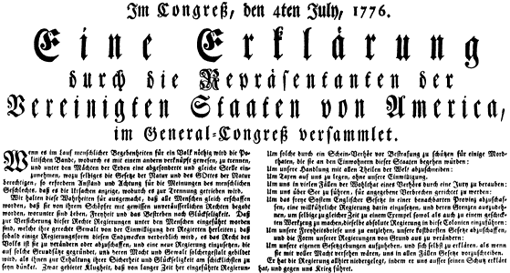

This is a static copy of the final website maintained by the Roy Rosenzweig Center for History and New Media.
Willi Paul Adams The Declaration of Independence in German
The history of the liberation and constitution of the North American colonies provides more lessons for German politics than the French Revolution. Polar Opposites: German Awareness of the Declaration of Independence Any explanation of German history between the failed Revolution of 1848 / 1849 and the successful establishment in 1949 of a stable democratic state in the west of Germany has to tell us why Germans failed to create a liberal democracy peacefully and on their own. The Weimar and the Bonn republics followed total defeat of the previous regimes in war. The intellectual historian Leonard Krieger in 1957 saw at the core of "the German problem" "the German idea of freedom": A peculiarly German attitude toward liberty took shape in the nineteenth century when the conservative supporters of the traditional monarchical and aristocratic authorities separated the ideal of national unification they advocated from the ideals of government by consent advocated by liberals. Not liberty but "nationalism became a definite political force internally allied with the authoritarian state." More recently, Hans-Ulrich Wehler sketched the antiabsolutist agenda of German liberals around 1800, including freedom of the press, equality before the law, and political participation for those citizens qualified by property holding and education. That noble program, he concluded, remained but a "grandiose utopia" because the socioeconomic and religious power structures were stronger, especially after the terror phase of the French Revolution, than the liberal forces of change. Enlightened absolutist rulers granted enough reforms to head off revolution. National consolidation and self-assertion by the German-speaking center of Europe was the stronger, more fundamental drive, protection of the individual's civil rights from a powerful government came second. 1 The polar opposite of this German political culture clearly was the political system proclaimed in Philadelphia on July 4, 1776, by a self-styled "continental" congress of delegates of thirteen colonies that the king of Britain had declared to be in a state of rebellion. The rebels violently broke with established authority, rejected any government not derived from the consent of the governed, and postulated as self-evident an existential equality of "all men." These Euro-Americans were so angry at being discriminated against and exploited by inept and burdensome colonial rule that they struck out on their own as equals -- equal to the existing nations of Europe -- and risked being conquered or choked by the most powerful navy of the period. By their universalist proclamation of human equality, the prosperous American revolutionary leaders also risked being held accountable thenceforth for the gap between the self-evident ideal and the obvious socioeconomic inequalities in their newly created independent states. We know that the Americans' war for independence and the formal breakup of the first British Empire in 1783 were observed with curiosity not only in the countries that were militarily involved, such as Britain, France, and Spain, but also in Prussia and other German-speaking principalities. We know less about how aware the German-reading public was of the American republican alternative to monarchical government. But members of the Prussian elite, for example, took note of the newly independent United States in Berlin in January 1784. In honor of Frederick the Great's seventy-second birthday, the Berlin Academy of Sciences had its member, a minister in the king's cabinet, Count Ewald Friedrich von Hertzberg, read a public lecture in French, "On the Forms of Government, and Which One Is the Best?" Aware of the British king's recent recognition of the rebellious colonies as sovereign states, the count admitted that "with the birth of the new American Republic our century has given us a new phenomenon, thanks to the mistakes of the British government and thanks to the political and commercial rivalries of neighboring powers." But he still believed the time for republics was "entièrement passé." "We have to wait at least half a century," he uncannily added, "in order to see whether this new Republic or confederated body will consolidate its form of government. At the moment, its existence is not yet evidence in favor of the republican form." 2 One way to explore German readers' interest in American independence and republicanism is to follow the trail of German translations of the Declaration of Independence. As we do so, we will also take notice of problems of translation, of how translators expressed in German words what did not yet exist in German political life. A full account of German reception of the Declaration of Independence should also analyze the French translations, because French was the language of intellectual life in eighteenth- and nineteenth-century continental Europe. French-language publications were widely available from Paris to Berlin and St. Petersburg. The Federalist, for example, was first published in German in substantial excerpts only in 1864. Readers of the learned Göttingen journal Allgemeine Literatur-Zeitung , however, learned in 1792 from a two-page review in German that a French translation of The Federalist had just been published in Paris. 3Indeed, several early German translators of the Declaration of Independence had French translations, and not the original, on their desks. The Philadelphia Translation of 1776 and Later Translations The story of German translations of the Declaration of Independence begins in Philadelphia around the corner from John Dunlap's printshop, even before the first copies of the broadside version in English came off the press on Friday July 5, 1776. Dunlap's professional competitor and political friend Henrich Miller reported in the Friday issue of his German-language newspaper that the Continental Congress had declared the united colonies to be free and independent states and that the English text was "now in press" and would be out "today or tomorrow." Miller probably picked up a copy at Dunlap's shop and together with his former journeymen Melchior Steiner and Carl Cist went to work on the translation. On Tuesday July 9, Miller's semiweekly newspaper appeared with its most impressive front page ever. It proudly presented in German the complete -- not yet unanimous -- "Declaration by the Representatives of the United States of America in General Congress assembled." A day or two before or after, Steiner and Cist printed their own broadside in the same layout: two newspaper-type columns (Dunlap's broadside had used the simpler one-line-across-the-page layout) with an impressive head. The text is nearly identical with Miller's newspaper version. 4 Miller's German was no peasant's lingo. Not a trained theologian or lawyer, the Pietist printer clearly was a man of the word, and after ten years of reporting the public debate on the colonists' rights, he produced a dignified, precise rendering of the whig and natural rights rationale for independence: The colonists have become "a people" of their own ( ein Volk ), equal to other "powers" ( Mächte ) on the basis of "the laws of nature" ( Gesetze der Natur ). The enlightened thinkers' "self-evident" truths are explained as "accepted by everyone" ( ausgemacht ). "Men" are, of course, Menschen, female as well as male. "Unalienable Rights" correctly becomes unveräuberliche Rechte, rights that cannot be sold or given away. The legally decisive "Absolved from all Allegiance to the British Crown" is forcefully expressed by von aller Pflicht und Treuergebenheit gegen die Brittische Krone frey- und losgesprochen, from all duty and loyalty to the British Crown freed and absolved. Throughout, the Philadelphia translation was at least as good as eighteenth-century translations into German produced in Europe, including ones by university graduates. The explanation for Miller's and his helpers' political literacy was that for ten years they had translated and printed documents of, and reports on, the power struggles between royal governors and colonial assemblies, acts of parliaments, and speeches and pamphlets. They also enjoyed the advantage over European translators that they lived through what they wrote about and that Philadelphia and several Pennsylvania counties were bilingual places where German speakers active in politics and journalism were in constant communication with English-speaking colleagues. Taken together, Miller's and other German-speaking authors' writings between 1775 and 1790 constitute the German American political Enlightenment. 5 In Germany, the intellectual achievements of the Philadelphia Germans were ignored until 1987. 6If they dreamed of influencing the society they had left, they were as disappointed as would be the liberal refugees of the aborted uprisings of 1848 in Germany and Austria. Successful emigrants may not be able to change the stay-at-homes by their example. The 1776 Philadelphia text, therefore, did not acquire the status it deserved as a particularly authentic translation. It did not enter the canon of Enlightenment texts in Germany. Instead, Thomas Jefferson's text has been continually adapted by translation.  The first translation of the Declaration of Independence into German was printed in two formats: as the front page of the biweekly newspaper Henrich Millers Pennsylvanischer Staatsbote on Tuesday, July 9, 1776, and published at about the same time as this broadside by Miller's junior colleagues Melchior Steiner and Carl Cist. As part of their Americanization, German speakers in America produced translations of the declaration throughout the nineteenth century and published them bound together with such expressions of American patriotism as "Parson" Mason Locke Weems's biography of George Washington. 7As the declaration became an icon of American nationalism, cultivators of a German American ethnic group consciousness desperately tried to find a role in its making. In 1855 in heavily German Cincinnati, the publisher H. M. Rulison put between two covers translations of the Declaration of Independence, the Articles of Confederation, the United States Constitution, and Washington's Farewell Address. The elaborate title page and the brief preface exude a warm celebratory patriotism: It was American to read George Washington in German. This is the only publication of the Declaration of Independence I am aware of that tells the reader in an appendix where each signer was born. Five were immigrants: two born in Scotland, two in Ireland, and one in England. If immigrants could be founders then, immigrants could certainly be first-class American citizens now -- even if the Know-Nothings be-trayed true Americanism in the 1850s. Some German Americans claimed German American authorship of the fake declaration of independence allegedly published on May 20, 1775, in Mecklenburg County, North Carolina. In the twentieth century Julius Goebel made the contorted claim that the German philosopher Christian Wolff guided Jefferson's thinking in June 1776: "What had been slowly evolved in the quiet workshop of the German philosopher now loomed in historical reality by the establishment of a democracy such as the world had not seen before." 8 The Translations of Basel (1776), Göttingen (1777), and Berlin (1794) The German American translations served a more readily recognizable purpose than the dozens of German translations and publications in Europe from 1776 to 1998. Academic, political, and, in some cases, journalistic and commercial interests are difficult to disentangle. The first European translations into German were not published as manifestoes of revolution. But they were made in circumstances where republicanism figured as a tradition (Basel), a threat (Göttingen in the realm of George III), or a dream (Berlin in the era of the French Revolution). The first German translation of the Declaration of Independence in Europe was produced in the Swiss city republic of Basel in October 1776 by the philosopher and secretary of the city council Isaak Iselin. In the "Historical News" section of a monthly he edited, Iselin presented a creative translation. Although he does not tell his readers, internal evidence strongly suggests that he was working from a French translation. He rendered "self-evident" by the circumlocution "of convincing certainty," whereas any speaker of German, reading "self-evident" would almost automatically have chosen selbstverständlich. Iselin turned "unalienable" into "rights they cannot pass on," when the English original would almost certainly have triggered the close and accurate unveräuberlich. The "pursuit" of happiness Iselin turned into "the desire" to be happy, almost certainly because of désir in the French text he was using. The second time "Happiness" occurs, he aptly turns it into Wohlstand, a combination of "welfare" and "prosperity" equivalent to the French bien-être. In the legal conclusion, Iselin misses the sharpness of "absolved from all Allegiance" because the French gave him the cue only for the end of "all dependence." For "right of Representation" and "legislative bodies" he also found no plausible German equivalents, although they were available ( Repräsentation, Körperschaft ). Iselin's text, because of the additional French filter it passed through, is clumsy and in places obscure and unfit to become an inspiring republican manifesto in the German language. Iselin added a page of commentary in which he deplored the harsh tone and the absence of any expression of the deference "children owe to their parents and peoples owe to their kings." He hoped "the American British" would win their freedom and, when free, would not enslave "other peoples or human beings." With that remark on slavery, Iselin initiated a near tradition: The universalist American appeal to liberty and equality was read back in judgment on its collective author, partly out of the sentiment "Physician, heal thyself." Altogether, Iselin's voice was that of the lone editor of a learned journal, not that of the speaker of a live club of Swiss activists eager to spread republicanism to the subjects of dukes, princes, and kings on the other side of the Rhine River. 9 In 1777 Matthias Christian Sprengel, like Iselin addressing an educated audience, published an anthology of essays "on the present condition of North America" in the university town of Göttingen in Hanover, that is, on territory ruled (in personal union) by King George III of England. The king would not have minded reading the piece. Sprengel, deploring the decision by German newspapers to report only the beginning and the end of the Declaration of Independence, wanted to fill in the important part, the list of grievances. For the text he did not refer to Henrich Millers Pennsylvanischer Staatsbote or to a London newspaper but to the French monthly Mercure Historique et Politique of October 1776. Sprengel manipulated a central feature of the declaration. Instead of straightforwardly translating the repetitive and accusatory "He has . . ." referring to the king at the beginning of each grievance, Sprengel introduced the list by saying "The Congress complains that the British government . . . ," and since Regierung (government) is a feminine noun, all grievances in his version begin "She has." In his commentary, Sprengel dismissed the colonists' complaints as "unproven and groundless" and claimed (wrongly) that many of the grievances had been copied from "the rhetorical flourishes of [Thomas Paine's pamphlet] Common Sense. " Sprengel speculated that the Crown had not deigned to refute them because to do so was below "England's dignity." For a more reliable account of what had occurred, Sprengel referred his readers to a Loyalist pamphlet published in London in 1776. 10 Immediate published reaction in German-speaking Europe to the American Declaration of Independence was obviously haphazard and incomplete. During the war for independence, German readers were told more about battles than about their underlying causes. 11 Only after the French Revolution had stirred up public debate in German lands did comparisons with the republic in America arouse greater interest. The liberal Berlin publisher Christian Friedrich Voss had David Ramsay's History of the American Revolution (1789) translated. His political motivation is clear from the choice of Georg Forster, a well-known republican publicist in Mainz, and his aide Margareta Forkel as the first translators. The project, which included a translation of the Declaration of Independence, was finished in Berlin by J. F. K. Seidel, professor at a Gymnasium, clearly a professional historian. Together, they produced a superb translation. The language is precise and smooth, from "truths that need no further proof" to the end of "all obedience to the Crown of England." The translation deserved more publicity, but it remained buried in the four tomes of Ramsay's history. Whether it was ever published on its own in a journal is doubtful. Given the frenzy of spoken and printed arguments for and against political change in post-1789 German-speaking and French-speaking Europe, public attention to the American Declaration of Independence in German translation was minimal. 12 The Irresolute Revolutionaries of 1848 and the American Constitution The Revolution of 1848 provided the one historical moment when German liberal and democratic intellectuals and politicians might have gone back to the American Declaration of Independence for arguments to use in their struggle against the anciens régimes clinging to power in the German states after 1815. But the majority of them were not resolute republicans but irresolute liberals ready to compromise with the ruling dynasties. 13 Those liberals, who dominated the Frankfurt Parliament in 1848 / 1849, were more interested in the federal power-sharing arrangements of the Constitution of the United States than in the uncompromising proclamation of popular sovereignty in 1776. Their aim was to replace the loose German Confederation of 1815 with a national government under a liberal constitution that provided for one parliament and one central government under a constitutional monarch. That political aim also explains why the first German compendium of American constitutional law, published in 1824, mentioned the Declaration of Independence only in passing. What struck its author, the liberal Heidelberg professor of government Robert von Mohl, was that the rebelling colonies, "out of their own sovereignty" ( Machtvollkommenheit ), changed their colonial charters to state constitutions and instructed their delegates to the Continental Congress to vote for inde-pendence. Without a word on self-evident truths or rights, Mohl went on to tell the German readers how wise the Americans were to unite at once under the Articles of Confederation, because "only by uniting their forces were they able to defend their liberty." His historical appraisal obviously mirrored the German liberals' hope for a national unification of their own. 14 In 1834 the eager, sympathetic, and competent editor and translator Georg Heinrich Engelhard proudly announced the first complete collection in German of all American constitutions ratified from 1776 to 1832, with brief introductory notes. He deplored the "barbaric German" of the few translations published in the United States, without citing them. With German emigration from the upper Rhine Valley and Hesse picking up, Engelhard suggested future American citizens take the book with them, "so they know which laws and human rights they will enjoy under the protection of the Union, and which shortcomings they are leaving behind in the land of their fathers." He needed to include the Declaration of Independence, he added, "because it is the foundation of American liberty." 15 Probably the most influential summary of liberal political thought in the prerevolutionary period was packed into the multivolume encyclopedia edited by the professors of government Carl von Rotteck and Carl Theodor Welcker. The twelve-volume Staats-Lexikon was published from 1834 to 1844 outside the reach of German censors in the tolerant city of Altona (just outside Hamburg, but under Danish rule). It played much the same role for German liberalism as the great French Encyclopédie had played for the Francophone Enlightenment. Later, in 1848 / 1849, Welcker served on the Frankfurt Parliament's committee to draft the constitution that was never to go into effect. The law professor Friedrich Murhard wrote the highly informative entries "Nordamerikanische Revolution" and "Nordamerikanische Verfassung" (constitution); the latter entry included much of the Declaration of Independence. The self-evident truths were so important to him that he called them "undeniable and plausible by themselves." The right to alter or abolish government became a more dramatic "topple" ( stürzen ), which is wrong, because the expression precludes the ambiguity of the original meaning, which covers a change either in the form of government or in personnel. In his commentary, Murhard keenly observed that "the sovereign power" the British Crown lost devolved on the Continental Congress, although it was as yet only a Staatenbund , a confederation of states. The subsequent reference to Supreme Court justice Joseph Story's Commentaries on the Constitution reveals the German liberal's search for a more centralized constitutional solution to replace the loose German Confederation. 16 In the two decades before 1848 publishers seemed to sense a market for serious information about the United States. The publisher F. A. Brockhaus asked the liberal historian Friedrich von Raumer of the University of Berlin, who had visited the United States in 1843, to write a general history of the United States. Raumer included a combination of paraphrase and verbatim translation of the preamble of the Declaration of Independence in his account of the American Revolution. He explained the "God-given" inalienable rights as "eternal." But he softened the republican rhetoric; when it accused the English king of "absolute Despotism," he tuned down to "unlawful unlimited power." He omitted "that they are Absolved from all Allegiance to the British Crown," although he translated the sentences before and after. Raumer explained that "the declaration argues most strongly against the king, because America did not recognize Parliament's right and power at all." In 1848 Raumer was elected to the Frankfurt Parliament and went on to Paris to fill a short-lived role as its minister there. Raumer's case dramatizes the fact that liberals knew exactly what republican government based on popular sovereignty meant, and they decided not to fight for the necessarily radical break with the powers that be. Hence most historians' assessment that the majority of German forty-eighters were irresolute revolutionaries. 17 The wealth of information in print about the American system of government explains why in the debates and propaganda of 1848, a rough knowledge of the American political system was assumed among the activists. A striking example is a Heidelberg leaflet of March 26, 1848, which deplores the recent "butcheries" at Vienna and Berlin and calls for a constitution for all of Germany, "on the freest foundation." To explain what such a foundation would be, the authors claimed: "The majority of the Heidelberg meeting is convinced that the German people is ready for the North American Constitution." Specific demands for freedom of the press, separation of church and state, abolition of nobility, and a "Habeas-corpus-Acte" followed. 18 The call for an American-style constitution prompted the liberal Robert von Mohl, who in 1845 had lost his professorship for daring to criticize the government that employed him, to respond. He was not persuaded that an American-style republican federal constitution would bring American-style prosperity to Baden. But he referred to the French Republic as his prime exhibit of republican social unrest and high taxes. Mohl was elected to the Frankfurt Parliament and in 1848 / 1849 served as minister of justice in the short-lived national government. 19 The forty-eighters who discussed a new German constitution in the press and in the Frankfurt Parliament referred to the American Constitution repeatedly, but in the end they sent a delegation to Berlin to offer the crown to the Prussian king, who spurned the gift usurped by the bourgeois. Defeated, several thousand active forty-eighters fled into exile in neighboring countries, and many of them eventually settled in the United States. 20 After Defeat: Academic Interest in the American System From 1850 to 1918 discussion of the American form of government was of merely intellectual interest for most Germans as Prussia under the Hohenzollern dynasty forged a German Reich without Austria. The revolution was "drowned in blood," and in the following decades, civil rights were violated on a massive scale. Property qualifications for voting were introduced, and German historians have assessed the rule of William II (1888 - 1918) as an arbitrary "personal regime" offering "illusory constitutionalism." There was a parliament but no genuinely parliamentary government, because, in the words of the German historian Hans-Ulrich Wehler, "essential preconditions were missing for the quantum leap from authoritarian to parliamentary monarchy, foremost among them: the will to fight and take risks that characterizes a proud and power-hungry parliament willing to engage in a great conflict in order to assert its place at the top of the pyramid of power." 21 Only after the ancien régime's self-destruction in the war of 1914 - 1918 did the ideals of the democrats and the moderate liberals of 1848 get their second chance. In the meantime, memories of the road not taken in 1848 were kept alive by the socialist tradition and by liberals mainly based in academia. But rethinking of the German ideals of 1848 rarely took account of the American experience of 1776. American republicanism was, however, of practical interest to the 5 million emigrants who left for the United States between 1850 and 1910. 22 Possibly stimulated by the tragedy of the American Civil War, in 1863 the Berlin publisher Carl Heymann and partners in New York and London jointly published a well-researched history of the United States by the frustrated republican Karl Friedrich Neumann. The publisher introduced Neumann as an "orientalist" and historian of the British Empire in Asia, who had turned his attention to "the evolution of the transatlantic union as a model worth pursuing for our own fatherland." The publisher quoted Hermann Schulze-Delitzsch, a judge and liberal reform politician: "The history of the liberation and constitution of the North American colonies provides more lessons for German politics than the French Revolution." Neumann's ten pages on the making and contents of the Declaration of Independence are the most detailed and best documented that had been published in Germany so far. But enthusiasm did not make him the perfect translator. After the celebratory introduction ("Never have our inborn human rights, the power and supremacy of peoples been expressed in more beautiful language."), Neumann severely simplified the text yet presented it in quotation marks: "All human beings are equal. They have inalienable rights, among others, the right to life, liberty and a happy existence." He then quoted Jefferson's condemnation of slavery, which was struck from the draft by Congress. Nevertheless, Neumann falsely claimed, "all heroes of the Revolution were opponents of slavery." Concluding, Neumann reported that wherever American citizens are on the Fourth of July, they congregate to celebrate this blessed day and, he added, "all thinking mankind is . . . obliged to celebrate this day, because this declaration . . . has called mankind to rise from the depths caused by tyranny and stupidity to assert its inborn dignity, to claim its inalienable rights, to recognize its true situation, and to learn to act on its own." There was no need, in 1863, to censor such pious preaching. 23 It was a private scholar, probably paid by public-minded Bremen merchants, who in 1864 translated and paraphrased selections from The Federalist. To provide documentary background for an understanding of American nation-building, Wilhelm Kiesselbach in addition translated most of the Declaration of Independence and other documents of the American Revolution. 24 Kiesselbach did not stop to ask whether the values of 1776 were fulfilled or betrayed in 1788, because both documents, from his perspective, helped establish a democratic state, the like of which he desired in Germany. Academic interest in the narrow sense of the term spurred Hermann von Holst, the first professor of American history at a German university, to set a new professional standard in his 1873 constitutional history of the United States: He simply quoted from the declaration in English. Holst had emigrated to New York in 1867, but after Prussia conquered Alsace and began staffing the university of Strasbourg, he returned in 1872 to take up that professorship. In Reconstruction New York he had adopted a strong Unionist or nationalist view of American history, and the federal division of sovereign power and governmental authority became the central theme of his writings. His explanation of the thirteen colonies' joint proclamation of national independence emphasized the overwhelming force of practical necessity: "The struggle with England demanded energetic cooperation." Referring to the ratification of the Constitution, Holst quoted John Quincy Adams as saying that "grinding necessity" had forced a reluctant public opinion to accept the national covenant. 25 In 1892 Holst reemigrated to become the first chairman of the history department at the new University of Chicago. Holst's binational career confuses the neat dichotomy between European and American that posits the "German" historian or translator viewing American history from afar and interpreting it for a German audience. Not only did America's pull as an open society lure threatened German farmers and failed revolutionaries across the Atlantic and allow them in a few years to become American frontier farmers and Republican party orators campaigning for Abraham Lincoln; American national historiography was likewise open to European input from the beginning of its professionalization. Holst's constitutional history written in German and for Germans remained an influential explication of the American system of government for decades. Holst's defense of the North's position in the Civil War also illustrated the viability of the federal form of government even in the extremity of a civil war. He thus provided an argument for German liberals who rejected claims that Prussia's hegemonic power was needed to unify the nation. By the end of the century, other German scholars agreed with Holst in connecting the Declaration of Independence and Constitution more with nation building than with rights and government by consent. The law professor Georg Jellinek fought a fierce battle with French historians over the -- obvious -- influence of the American declarations of rights on French declarations from 1789 on. But Jellinek's prime exhibit for American influence was the state bills of rights, not the Declaration of Independence. In 1900, in a highly influential compendium of public law, Jellinek devoted a chapter to "the rise and fall of states" in which he referred to the secession of colonies through a unilateral declaration of independence as one historically successful type of nation building. 26 Weimar Republicanism, 1918 - 1933 After Germany's defeat in World War I and the kaiser's abdication, interest in American constitutional history took on new urgency. Law professors with a political agenda and journalists discussed the question "republic or monarchy?" to quote a 1919 brochure's title. In a general history of the United States, Friedrich Luckwaldt, a professor of history, emphasized Jefferson's intellectual heritage: His contemporaries had claimed that he had "copied" from John Locke's Two Treatises of Government; others had mentioned as inspiring precedents the Dutch proclamation of independence of 1581, the English articles of indictment of Charles I of January 20, 1649, and the (as we now know, spurious) Mecklenburg County declaration of May 1775. These influences, Luckwaldt admitted, may have been indirect since Jefferson had said that he did not consult books at the time. New or not, Luckwaldt considered the declaration "the zenith of the political philosophy of the Enlightenment." He translated smoothly and precisely "these truths that are plausible in themselves" and "the people's right to alter or abolish." The final clauses reminded Luckwaldt of the Mayflower Compact: "We, therefore, the representatives of the United States of America in congress assembled, profess before the highest judge of the world the purity of our motives." Luckwaldt connected revolutionary rhetoric with political reality by reporting that joy over independence moved a crowd in New York "to topple and dismantle George III's leaden monument for smelting and bullet casting -- for all knew, bullets they would now need." 27 In the postwar years, bitterness and scorn showed in the writing of conservatives who felt personally defeated. Eduard Meyer, an internationally acclaimed authority on ancient history at the University of Berlin, had lectured at the University of Chicago in 1904 and in 1909 - 1910 had taught as Kaiser Wilhelm-Professor at Columbia University, in an exchange agreement pushed by the kaiser's government to soften the sharp edge of German-American global rivalry. Unable to comprehend and accept the British-American special relationship, Meyer had contributed highly emotional anti-American journalistic pieces to the war effort. After the war, Meyer wrote an American history for a series focusing on foreign countries and Germans abroad. He felt obliged, he said, to try to explain "the hostile attitude a great part of the American population and especially the American government" had shown toward Germany and to respond to the fact that "the collapse of the building of our state ( Staatsbau ) has turned Germany into a democracy." Germans should, therefore, "learn from the most advanced democracy." He wanted a strong, responsible presidency after the American model, strong enough to counter excessive parliamentarism, stronger than the Weimar Constitution provided for. Meyer dated the preface Berlin, August 12, 1919, the day after President Friedrich Ebert had signed Germany's first republican constitution. So far, Meyer claimed, postwar Germany had copied only "the weaknesses of American democracy: greed, fraud and unbounded self-indulgence, waste of public funds, thoughtless submission to majority behavior and acceptance of empty phrases, the tyranny of party politicians, misuse of the criminal law, even lynch law, and mass strikes with violence and shooting in the streets." 28 Meyer's chapter "The Rebellion against England and the Declaration of Independence" rejected "the legend" of a tyrannical king driving loyal subjects to fight for their freedom. In reality, "an ambitious parliamentary oligarchy" was at fault. A majority of the educated were Loyalists, Meyer claimed without giving a source. A "determined minority," however, imposed its will on the colonies, if need be by terror, while pretending to be the victim. In Virginia, the "radical liberalism" of enlightened aristocrats such as Jefferson was based on the conviction that they would never lose their power to "the masses." Declaring independence was postponed as long as possible to avoid provoking Loyalist resistance. 29 Despite this partisan spin, Meyer translated key clauses of the declaration correctly, except for "Life, Liberty and the Pursuit of Happiness." Meyer took the liberty of substituting "property" for "liberty." Whether he did so out of malice, as a result of hasty note taking, or under the influence of another translation he was adapting, we cannot tell. Jefferson expressed widespread ideas of "humanitarian enlightenment" effectively, Meyer commented, but "they are not to be taken seriously. . . . No one thought of really observing these human rights and granting them to Negro slaves and to the Indians." Nevertheless, Meyer the historian concluded, "these sentences, as is well known, were of the greatest importance for world history, for developments in America and in Europe, and especially for the revolution in France, whose Declaration of the Rights of Man directly continues this tradition." Meyer sighed: "Slogans are among the most powerful and devastating forces that shape human life, as we learned repeatedly during the World War; they can excite the masses and carry them along to unforeseen consequences." 30 Another embittered monarchist living in an unloved republic was the unemployed jurist Emil Kimpen. His 1923 history of American expansionism contains the only debunking version of the making and meaning of the Declaration of Independence I found predating that of the East German Communists: In 1775 the public mood was "heated up"; after Paine's appeal in Common Sense the choice was "arrangement with France or submission to England"; news of mercenary troops from Hesse was propagandistically played up to rouse the colonists' weak will to fight; the decision for independence was reached only after great efforts and an unexplained manipulation of members' attendance at the meetings of the Continental Congress. Kimpen translated the declaration's preamble with one curious mistake. In his version, governments are instituted among "rulers" ( unter Herrschern ). Since the subsequent right to alter or abolish is translated correctly, this mistake hardly seems intentional. The undocumented debunking focuses on John Hancock, who is said to have inherited $ 280,000 from his father, who had smuggled tea from Dutch territory. The son himself acquired the title of "prince of smugglers." Among the other signers, one-fourth traded and speculated in land, says Kimpen without mentioning Charles Beard or any other source. "This shows clearly that it was a commercially motivated revolution ( Handelsrevolution )." He heaped scorn on the signers' hypocrisy: The honorable signers forgot that there were half a million Negro slaves among the colonists, and many whites whom need forced to live in so-called voluntary servitude. They, too, would have had a natural right to freedom. The enthusiasm for human rights meant nothing but resounding phrases to deceive the naive. Liberty was not their goal, but they got what they wanted: the American eagle was born under that will-o'-the-wisp called the star of freedom. Today. . . . The whole world is watching with deep anxiety the shadow cast by the eagle from the land of the stars. This beautiful specimen of European conservative rejection of American universalist norm setting, which justifies itself by reminding the Americans that they have not yet met the norm themselves, could have been published a decade earlier or later. 31 A lone voice heralding a new era of dispassionate scholarly investigation in Germany of American history spoke up in 1929, when the young Otto Vossler published his dissertation on the political ideas of the American Revolution. Vossler continued Jellinek's search for transatlantic intellectual "influences," but he was unable to let go of the national matrix of political history. The seven pages on the Declaration of Independence are part of a contorted scheme that juxtaposes "two fundamentally different ideologies," one called "essentially English, whig, legalistic, and traditional," the other "predominently of French origin, republican, rationalistic, and universalistic." Only after independence, Vossler claimed, did Jefferson feel free to develop more "European," that is, French, impulses for which, among other things, his Virginia environment with its class structure had prepared him. To make the scheme fit, Vossler played down the universalist language of the declaration's preamble and emphasized its use of English legal and constitutional categories. How did Vossler translate? Not at all, having Carl Becker's 1922 monograph at his disposal, he simply put the English text of Jefferson's original complete draft in the appendix. 32 The Nazi Version of American Exceptionalism During the Nazi period, Friedrich Schönemann was the most visible of the academic America-experts. In 1936 he was given the chair of literary and cultural history of North America at the University of Berlin, the only professorship of its kind in Germany. From 1940 on he also chaired the American program of the university's adjunct faculty for "foreign" studies. In 1942 Schönemann published his account of the American national story in a handsomely illustrated large-size volume, part of a series of historical reference works that would typically be bought by public libraries. Schönemann provided more than propaganda slogans. He mixed detailed factual information with party-line ideology. The opening statement about the "general foundations" of American history, for instance, describes the migration of Europeans to North America and makes an undisguised claim to Germanic racial superiority: The "mixed people" of "Germanic English," Celtic Scots and Irish, continental Germans (who were assumed to form an unmixed gene pool), Dutch, and Scandinavians established, he claims, "the decisive genetic make-up of the American people of today and shaped the basic character of American culture. They provide the largest part of the leadership of the nation and carry the responsibility for the future." To explain how the motley groups of immigrants became one people ( Volk ), Schönemann translated into Nazi terminology what Frederick Jackson Turner had expressed in liberal individualist language: It was the interaction of people and the environment, in his words, of "blood and soil" ( Blut und Boden ). In America, as elsewhere, he declared categorically, "blood and soil were fate." After 1880 he saw a twofold turn of America's fate ( Schicksalswende ): No more free soil was to be had in the West, and the human "blood" began flowing to America from eastern and southern Europe. Among the immigrants from 1905 to 1910, Schönemann pointed out, there were six hundred thousand Jews. 33 Schönemann described the decision for independence as the triumph of a "radical minority" of Patriots, who pulled the wavering neutrals to their side and overcame the disorganized Tories. "In the end, the logic of facts asserted itself against mere will or lawyer's reasoning." Schönemann also reinforced the traditional German stereotype of England as a shopkeepers' and bankers' country. The king and his government, he explained, did their best to represent the "selfish monied interests" that dominated "the English system" and its "imperialist colonial policy." Schönemann quoted from radical Whig antigovernment articles in the London press to authenticate his characterization of the (implied: then as now) rapaciously materialist English. 34 Schönemann recognized and did not hesitate to say in 1942 that the proclamation of human rights ( Menschenrechte ) constituted the "essence" and historical significance of the American declaration. It truly expressed "the American mind." It grew organically out of the special circumstances of American history: The variety of religious groups in colonial America encouraged a strong individualism; New England Congregationalism strengthened local self-government in secular matters as well; life under frontier conditions led to an irrepressible sense of freedom and "economic individualism." As a consequence, "American ideas of the natural freedom of each individual human being and of the sovereignty of the people collectively grew naturally out of the soil and living conditions in America." 35 Schönemann described the overwhelming forces of fate and circumstance in ominous combined nouns: "the driving force of the times" ( Zeitendrang ) and "the demands of life" ( Lebensforderungen ); the war for independence was part of "the course of fate" ( Schicksalsgang ). These words were typical of what after 1945 was called the manipulative language of the Third Reich and the lexicon of inhumanity. Underlying Schönemann's description of America's predetermined "fate" was the Nazi version of nationalist exceptionalism. It undercut any universalist appeal to natural rights, because the German nation's fate was different from the American nation's. It was unnatural to assume otherwise. 36 Thus safely immunized against any practical inferences, Schönemann could translate and paraphrase the Declaration of Independence fully and fairly, including all clauses about the consent of the governed and the character of tyrants. In France, he added, "these so-called rights of men and citizens did much harm." He mocked the articles on the fundamental rights and duties of German citizens in the Weimar constitution of 1919 and reported with approval that the philosopher Georg Hegel and the historical school of jurisprudence had denied the existence of individual rights derived from natural law: "A state is not the result of a contract, and there are no inborn rights." Americans, Schönemann commented, were too sober and practical to let "mere theory" determine their behavior. They took "equality" to mean "equality of opportunity," which phrase he quoted in English. American realists of post revolutionary generations would speak of "glittering generalities" -- this phrase he translated but put in quotation marks without giving a source. Today, Schönemann concluded, the authoritarian idea of the state ( der autoritäre Staatsgedanke ) is fighting "western democracy," including the idea of fundamental rights of the individual. For a believer in National Socialist ideology, it was not necessary to censor the American Declaration of Independence because it meant nothing for Germany. Germany's "fate" was of another kind. 37 The House Divided against Itself: The Federal Republic of Germany Germany's fate, after 1945, included the division of the reduced country into two states. In the western zones of occupation, only practical institutional arrangements were at issue when a constitution was drafted in 1948. The French, British, and American military governors insisted on the division of governmental powers between a federal center and the already existing eleven states ( Länder ). No substantial or politically influential group of West Germans disputed the West German state's ideological foundation, Schönemann's dreaded "western democracy." Without any dispute over ideological fundamentals, a parliamentary system was built on the proven parts of the Weimar construction, including its bill of rights. Nor was there practical use in 1948 - 1949 for the declaration's clarion call for the right to resist. The German people had obviously been unable "to alter or abolish" their oppressive government. There would be no popular referendum, no specially elected ratifying conventions to legitimate the West German constitution of 1949. 38 For educational purposes, the United States High Commission in Bonn and, later, the American embassy with its semi-independent United States Information Service ( usis ) held in ample supply new and satisfactory translations of the Declaration of Independence and the Constitution of the United States. German publishers were free to reprint these texts. They have been reprinted many times since the 1950s in commercial publications, scholarly monographs, and the newly licensed school books. 39 Schönemann's heavy tome has been replaced by a similarly impressive multivolume world history series in which the American Revolution is interpreted by no less a scholar than Edmund S. Morgan, speaking in a German voice; the account includes a new, acceptable translation of the declaration's preamble. From the 1960s on and especially at the time of the bicentennial, American and European scholarly expertise began to intermingle, as German, Austrian, and Swiss scholars compared their individual (not nationally defined) views of the revolutionary period. 40 In the second German state east of the Elbe River, the Communists also happily taught the American Declaration of Independence in their schools. The ideals of 1776 were a welcome expression of what Karl Marx had called "progressive ideas." After they had served a specific purpose for the bourgeois class, the teachers explained, the ideals of 1776 were blatantly disregarded by most Americans. Fortunately, they were upheld by the socialist tradition and were now being put into practice in the German Democratic Republic. 41 To prepare their lessons, East German teachers of English used a university-level textbook, written in an awkwardly translated English, that included the full text of the declaration. The text, which was, of course, approved by the party censor, explained the declaration's significance in the Marxist scheme of world history. This exercise in historical assessment is best given in the original: Under the pressure of the popular masses enthusiastically demanding independence on the one hand and of the hardening British-Loyalist counterrevolution on the other Congress adopted the Declaration of Independence drafted by Thomas Jefferson on 4th July 1776. This step was of very great historical importance, which went far beyond the limited bourgeois framework of the revolution of independence. Though it proceeded from bourgeois positions of natural right, the document proclaimed as basic human rights "life, liberty and the pursuit of happiness" -- rights which the modern usa opposes all over the world and this paradoxically in the name of "human rights"! Irrespective of the fact that the American bourgeoisie later showed itself incapable of guaranteeing its own citizens the human rights it had proclaimed, this idea of human rights with its humanistic content which mobilised the masses -- which has nothing to do with bourgeois property and with the exploitation of man by man -- has not been surpassed even today. On the contrary it has only been made a reality in socialism. However, the Declaration of Independence was shot through and through with a deep, albeit contradictory, democratism. It derived the "legal powers" of the rulers "from the agreement of the ruled." Here it must be pointed out that only enfranchised citizens were meant, i.e. women, blacks, Indians, etc. were excluded. Nevertheless this idea of democracy in principle still possesses its validity today -- though not in the capitalist countries, where for a long time it has been replaced and ousted by the dogma of "representative democracy." The Declaration of Inde-pendence -- and herein lies its imperishable historical achievement -- proclaimed and underlined the right of a people to revolution, a right which the imperialist bourgeoisie of the usa everywhere and especially in its own country tramples underfoot. Political action consistently carried out in the sense of the democratic-revolutionary basis of the Declaration of Independence is thus frequently slandered in the modern period as "subversive" and decried as "communistic." Here indeed lies the reluctant recognition of the fact that today it is the Communists who are the most consistent heirs and champions of the progressive traditions of the usa 's revolutionary war of independence. 42 Such East German party-line historiography was simply ignored by West German historians. Whether it was Henrich Miller in Philadelphia on July 5, 1776, or Emil Weiskopf working for the United States government in Bonn in 1951, all translators of the Declaration of Independence had to begin their work by asking the same question: What exactly did the words mean to those who voted for them on July 4, 1776? Only then would they be able to find adequate words in the German language of their day, words and phrases that would be understood by their assumed audiences. As with all professional standards, not all practitioners lived up to the professional ideal. Not malicious deceit, but distortion because of a lack of understanding of the original text and lack of literary skill in German accounted for the bad translations, whose number was low. The single most dangerous source of errors was translation from a French translation. Inserting a second filter more than doubles the distance to the original. None of the excellent early translations (Philadelphia 1776, Berlin 1794) acquired the status of a standard translation that was regularly reprinted. The Pennsylvania Germans' expert translation was ignored in Germany; the Berlin translation was ignored in Basel. Standardization was achieved only after 1945, when an institutional memory was created in the shape of the United States Information Agency ( usia ) and the same text was published repeatedly and even improved. The lack of standardization or canonization by regular reprinting of the 1776 translation surprises most among the German Americans, who as an ethnic group by the 1830s were eager to document and advertise their place in the nation's making. 43 The contorted attempts circa 1880 and later to document German input in the making of the Declaration of Independence were a measure of that eagerness. Perhaps the rapid Anglo-Americanization of many German immigrants, their sociocultural diversity, and their dispersal across the continent explain the weak development of institutional memory among the German Americans. In no case did I find the fundamental message of the declaration, its ideological core, misinterpreted for reasons of political propaganda or cultural incompatibility. Under regimes ideologically incompatible with free republican government, such as monarchy or National Socialist or Communist dictatorships, those who wanted to blunt the message of popular sovereignty and natural rights did so by presenting the content of the declaration in a politically neutralizing framework. The Nazi gloss on the declaration, for instance, declared individual natural rights something "Western" and foreign, not applicable to the German "folk." This immunization made it superfluous to censor or falsify single words or ideas in the text itself. Using the metaphor of filters, we can call such ideological immunization the conscious installation of a dense ideological filter. But the boundary between a cultural filter grown over the centuries and a willfully inserted ideological filter may not be definite, as we can see in the Chinese case study, especially in connection with terms that differentiate Chinese and non-Chinese concepts of god. 44 The East German Communist interpretation did almost the opposite, overriding differences by declaring the socialist movement to be the true heir of the republican values of 1776, whereas the bourgeois Americans had betrayed their own heritage in the nineteenth century by turning to unrestrained capitalism. Germans who articulated political ideas, it is safe to assume, were aware of the American as well as the French Revolution, and they had access to information about its major texts, including the Declaration of Independence, either in French, German, or English. But they did not wholeheartedly embrace the declaration and its outlook. The early German liberals and democrats whose revolution failed in 1849 were more interested in the United States Constitution than in the declaration, mainly because they faced problems of nation building that America's federal structure might solve. In addition, the liberals who dominated the National Assembly in Frankfurt in 1848 / 1849 were no consistent republicans but ready to adopt British-style constitutional monarchy. The flip side of consideration of the American Revolution as a model was rejection of the American universalist proclamation of fundamental rights as hypocritical. This debunking reaction has been a pattern among Europeans ever since the unilateral Declaration of Independence by slaveholders was rejected in pamphlets printed in London in 1776 and known to translators of the declaration in Göttingen in 1777. In our se-lection, the debunking response was last put forth in the Communist teachers' textbook of 1989. No matter how illogical it is to reject a norm because its articulator does not fulfill it, because of the emotional nature of political rhetoric, the retort "Physician, heal thyself" is likely to survive the East German state. Returning to the round table's questions concerning the historian's role as translator, interpreter, and mediator between cultures, the German translations demonstrate several types of authors, from an eightheenth-century printer to law professors editing a politically motivated encyclopedia of government, jurists drafting an almost-revolutionary constitution, and a professor at Berlin's university during World War II who claimed that "Western democracy" was not for the Germans. Throughout, there was little sense of professional tradition, obligation, or potential peer review of the translation and explication of the Declaration of Independence. Today, about four or five German translations are in print, but none of them has a translator's name attached to it. The usia handout version probably dominates the market, and the Internet may increase its circulation. Already, my students download the English text of the declaration from the Library of Congress's server. When they check the American embassy's Web site for the German version, they are delighted for a few moments (having clicked "history, colonial") because they are offered a link to Unabhängigkeitserklärung (declaration of independence). But the next click takes them straight across the Atlantic Ocean to the usia server in Washington, which gives them the complete text of the engrossed version, in Jefferson's language (www.usia.gov / usa / infousa / facts / aboutusa / decengl.htm). How long will it be before local historians shame the American ambassador into scanning the vernacular version of the declaration into the embassy's home page? The Library of Congress can then lay links from the mother text to translations across the world, from Tokyo to Moscow. The Internet can lead to centralization, but also to localization. In any case, it allows for quick access and comparison of multiple offers. In such a setting, upholding professional standards becomes all the more urgent. Historians know that their own minds, the wider reading public's interest in their work, and the allocation of scarce resources for research and publication will always be influenced by current events and present-day interests. As scholars, they must nevertheless uphold the ideal of the independence of scholarship in the choice of subject matter and explanatory hypotheses. In the open scholarly debate that determines the validity of certain statements about the past, national barriers and cultural filters must not be allowed to stop the free exchange of arguments and ideas. Hence communication across cultural divides by translation of texts is a fundamental process of human interaction across time and space, a precondition for the increase of knowledge and understanding. Given the strength of the countervailing forces of publishing for profit and propaganda for political motives, the historical profession in every country should consider it a professional duty to further the cause of expert translations. Defining the norm is difficult and different in each cultural situation. But unprofessional jobs can be detected and disapproved, and special efforts in transporting historical information through the filters of language and culture can be recognized and rewarded. Enhancing historical understanding across time and space between, as well as within, nation-states will always require expert translation and deserves all the care and protection the historical profession can provide. Appendix: The German Translator' s Choices Today Applying the professional ideal spelled out in the introduction to this round table to my own generation's cultural-political horizon and present-day linguistic sensibilities, the following are the ten most critical concepts or phrases in the preamble of the declaration (in order of appearance) that force the translator to stop and think about the original meaning before deciding how to translate them. 45 1. "human events": In this context the literal translation menschliche Ereignisse sounds redundant. Why did Jefferson and his colleagues not simply say "When it becomes necessary"? Why not just "events"? Is the "human" meant to stress human agency versus divine decree? Or does the phrase emphasize the colonists' agency as active partners in the social compact with their brethren in Britain and their king? The secular meaning could be transported without sounding hollow or redundant by Wenn menschliches Verhalten (When human behavior). 2. "one people": The English word covers both Bevölkerung (the population of an area) and the tribal unit that forms a state in the modern sense of nation-state, which would be Volk . Since the rest of the sentence clearly refers to independent states ("the Powers of the earth"), ein Volk is the equivalent term. The same usage also occurs in the next paragraph, where "the People" are given the right to alter or abolish the form of government. Again, das Volk is the best solution. 3. "the Laws of Nature and of Nature's God": "Law" combines the meaning of Gesetz (an act of the legislature) and of Recht (the decisions of judges). The double connotation of "laws of nature" ( Naturgesetze ) and "natural law" ( Naturrecht ) is, therefore, lost by choosing one of the two terms. And why "laws of nature's God" and not just "God's law"? One clearly interpretative translation is: "die Naturgesetze, Naturrecht und Gottes Gesetze." The danger with "Gottes Gesetze" (plural) is that the singular is used as a synonym for the Bible, and that meaning would contradict the original "Nature's God." 4. "opinions of mankind, a candid world": Menschheit is as universalist as "mankind." But "opinions" is closer to "beliefs" and "values held dear" than the relativist Meinungen and Ansichten which the dictionary suggests. Die Meinungen der Menschheit are a variety of serious beliefs and curious notions that do not necessarily merit "decent respect." What the Enlightenment thinker probably had in mind was an ideal public opinion on the universal scale. That meaning is adequately expressed by: Respekt vor der öffentlichen Meinung der Menschheit (respect for the public opinion of mankind). In the last sentence of the preamble, facts are "submitted to a candid world." Being candid or free from prejudice is the quality of an open, enlightened mind. Hence the authority appealed to -- in addition to the "Divine Providence" evoked in the very last sentence of the declaration -- is not the mass of the world's population, but only those capable of fair judgment, ergo: Deshalb seien der aufgeklärten Welt folgende Tatsachen vorgelegt (Therefore be presented to the enlightened world the following facts). 5. "self-evident": This crucial word is easy to translate because of structural similarities of German and English. Selbstverständlich fits beautifully; the underlying Verstand (reason) carries the full meaning of the Enlightenment's appeal to rationality. 6. "men": To any German reader of Locke's and other Anglo-American whigs' political theory in English, it is obvious that the translation is Menschen (all human beings, women as well as men). It would be ludicrous for the translator to choose Männer (male human beings). 7. "unalienable": The seemingly technical legal term is easy to translate because "unveräuberlich" carries its full meaning of something you cannot buy or sell or give up. 8. "Happiness": The routine translation into Glück is misleading because the German word means a state close to euphoria. Virginia's declaration of rights tells us, however, that "happiness" in this context designates a sense of satisfaction and safety that can be strengthened by good government: "the enjoyment of life and liberty, with the means of acquiring and possessing property, and pursuing and obtaining happiness and safety." 46 To tone down the euphoric element, we can couple "happiness" with "satisfaction," hence: Streben nach Glück und Zufriedenheit (striving for happiness and contentedness). 9. "Government": Jefferson here avoids the abstract "state" or "nation" and chooses the plural of the specific institution, hence Regierungen and not Staaten. Regierungsform is the equivalent of "Form of Government." But "to institute new Government" (singular and without the indefinite article) refers to more than a change in personnel. A fundamentally new kind of regime or form of government can be implied. Hence the encompassing eine neue Art der Regierung einzuführen (to establish a new kind of government) is called for. Two sentences on, "to throw off such Government," again in the singular and without the indefinite article, also requires a sufficiently encompassing phrase such as sich einer solchen Regierungsweise zu entledigen (to rid oneself of such a form of government), which is inclusive enough to cover the secession of colonies from the colonial power. The second-to-last sentence of the preamble speaks of "the necessity which constrains them to alter their former Systems of Government." "Systems" in the plural is broad enough to include all elements of colonial government: charters, royal instructions to the governors, acts of Parliament, adjudication by courts of law, acts of colonial assemblies, and town meeting and parish self-government as well as intercolonial arrangements of trade and cooperation. Since the Greek word also exists in German, it is best to stay with the literal translation Regierungssysteme. 10. "powers": The seemingly straightforward "organizing its powers" has a double meaning. First, it designates the three powers or branches of government, for example, the "Legislative Powers" and the "Judiciary Powers" mentioned later in the list of grievances against the monarch. Second, it refers to the range of legitimate authority of the government. The first meaning would be carried by Regierungsgewalten or Institutionen; the second would require Kompetenzen or Befugnisse. To convey both elements, the German has to combine both terms in a phrase such as Institutionen und Befugnisse so zu gestalten (to shape institutions and powers).
Willi Paul Adams is professor of North American history at the John F. Kennedy Institute for North American Studies of the Free University of Berlin, Germany. The author expresses his gratitude to David Thelen for close, creative, and patient cooperation across the Atlantic since the Journal 's internationalization began in earnest in 1991. Shared experience with a professional translator, Angela Adams, over the years helped him prepare for the project at hand. Kathy S. Alberts was his research assistant. 1. Leonard Krieger, The German Idea of Freedom: History of a Political Tradition (Chicago, 1957), ix, 277, 468 - 69). Cf. Hans Kohn, The Mind of Germany: The Education of a Nation (New York, 1960), 138; and Fritz Stern, Dreams and Delusions: The Drama of German History (New York, 1987), 243 - 73. Hans-Ulrich Wehler, Deutsche Gesellschaftsgeschichte (History of German society) (3 vols., Munich, 1987), I, 239, 359. Except where otherwise indicated, all translations into English are mine. Cf. Thomas Nipperdey, Deutsche Geschichte (German history) (3 vols., Munich, 1993), I, 288 - 89, 386 - 87. 2. Horst Dippel, Germany and the American Revolution, 1770 - 1800: A Sociohistorical Investigation of Late Eighteenth-Century Political Thinking, trans. Bernhard A. Uhlendorf (Chapel Hill, 1977); Comte de Hertzberg, Huit dissertations . . ., 1780 - 1787 (Eight essays . . . , 1780 - 1787) (Berlin, 1787), 147. For the broad context in which Hertzberg spoke, see Robert R. Palmer, The Age of Democratic Revolution: A Political History of Europe and America, 1760 - 1800 (2 vols., Princeton, 1959 - 1964). See also the conference proceedings in French and English: Claude Fohlen, ed., La Révolution Américaine et l'Europe (The American Revolution and Europe) (Paris, 1979). For the mutual awareness of political thinkers writing in English, French and German at the time of the American and French revolutions, see Otto Brunner, Werner Conze, and Reinhart Koselleck, eds., Geschichtliche Grundbegriffe: Historisches Lexikon zur politisch-sozialen Sprache in Deutschland (Historical basic terms: Lexicon of the political and social language in Germany) (8 vols., Stuttgart, 1972 - 1997). 3. Review of Le Federaliste by Alexander Hamilton, James Madison, and John Jay, Allgemeine Literatur-Zeitung (Göttingen) (Dec. 26, 1792), cols. 658 - 60. 4. Wilfred J. Ritz, "From the Here of Jefferson's Handwritten Rough Draft of the Declaration of Independence to the There of the Printed Dunlap Broadside," Pennsylvania Magazine of History and Biography , 116 (Oct. 1992), 499 - 512; Henrich Millers Pennsylvanischer Staatsbote, July 5, 9, 1776. For its illustrations, including the Dunlap broadside, see Karl J. R. Arndt, "The First German Broadside and Newspaper Printing of the American Declaration of Independence," Pennsylvania Folklife, 35 (Spring 1986), 98 - 107. On the 1776 German-language broadside publication of the declaration, see Magazin: Mitteilungen des Deutschen Historischen Museums (Berlin), 4 (Summer 1994), especially Reimer Eck, "German-Language Printing in the American Colonies up to the Declaration of Independence," ibid. , 6 - 21; Gerd-J. Bötte, "The First Printing in German of the Declaration of Independence in Philadelphia by Steiner & Cist, 1776," ibid. , 22 - 28; Willi Paul Adams, "The Declaration of Independence of the United States of America," ibid. , 27 - 61; and Horst Dippel, "The Declaration of Independence in Germany: Reflections on Political Culture and Shared Values," ibid. , 62 - 72. 5. Willi Paul Adams, "The Colonial German-Language Press and the American Revolution," The Press & the American Revolution, ed. Bernard Bailyn and John B. Hench (Worcester, 1980), 151 - 228; Willi Paul Adams, "Amerikanische Verfassungsdiskussion in deutscher Sprache: Politische Begriffe in Texten der deutschamerikanischen Aufklärung, 1761 - 88" (American constitutional debate in German: Political concepts in texts of the German-American Enlightenment), Yearbook of German-American Studies, 32 (1997), 1 - 20 (with a summary in English). On the ratification debate in German American newspapers, see Jürgen Heideking, "The German-Language Press in the Debate over the Ratification of the Constitution, 1787 / 88," in The German-American Press, ed. Henry Geitz (Madison, 1992), 195 - 214. 6. Miller's translation was printed in Germany probably for the first time in Angela Adams and Willi Paul Adams, ed., Die Amerikanische Revolution und die Verfassung, 1754 - 1791 (The American Revolution and the Constitution) (Munich, 1987), 213 - 18. Cf. Dippel, Germany and the American Revolution, trans. Uhlendorf; and Horst Dippel, Die amerikanische Verfassung in Deutschland im 19. Jahrhundert: Das Dilemma von Politik und Staatsrecht (The American Constitution in Germany during the nineteenth century: The dilemma of politics and public law) (Goldbach, 1994). 7. Mason Locke Weems, Die Lebensbeschreibung und merkwürdige Handlungen von Georg Washington . . . Aus dem Englischen übersetzt (The biography and noteworthy acts of George Washington . . . translated from the English) (Frederick, Md., 1809). See Die Constitution der Vereinigten Staaten von America, mit ihren Verbe berungen, und die der Republik von Pennsylvanien. Nebst Die Erklärung der Unabhängigkeit der Vereinigten Staaten und die Abschieds-Addre be von General George Washington (The United States Constitution with its amendments and the Pennsylvania Constitution. With the Declaration of Independence and Washington's Farewell Address) (Reading, Pa., 1823). 8. Das wahre Amerikanische Handbuch, enthaltend die Unabhängigkeits-Erklärung, die Artikel der Conföderation, die Constitution der Vereinigten Staaten, und Washington's Abschieds-Adresse (The true American handbook, containing the Declaration of Independence, the Articles of Confederation, the Constitution of the United States, and Washington's Farewell Address) (Cincinnati, 1855); Dr. E. H. M., "Die `Mecklenburgische Unabhängigkeits-Erklärung' " (The Mecklenburg declaration of independence), Der deutsche Pionier: Monatsschrift für Erinnerungen aus dem deutschen Pionierleben in den Vereinigten Staaten, 3 (March 1871), 93 - 94; Dr. E. H. M., "Nochmals die `Mecklenburgische Erklärung' " (The Mecklenburg declaration once again), ibid. ( June 1871), 114 - 16. On the spurious nature of the Mecklenburg County document, see Pauline Maier, American Scripture: Making the Declaration of Independence (New York, 1997), 173 - 74. Julius Goebel, "Christian Wolff and the Declaration of Independence," Deutsch-Amerikanische Geschichtsblätter: Jahrbuch der Deutsch-Amerikanischen Historischen Gesellschaft von Illinois, 18 / 19 (1918 / 1919), 69 - 87, esp. 83. 9. Ephemeriden der Menschheit, oder Bibliothek der Sittenlehre, der Politik, und der Gesetzgebung (Basel), 4 (1776), 82 - 92. 10. [Matthias Christian Sprengel], Briefe den gegenwärtigen Zustand von Nord America betreffend (Letters concerning the present state of North America) (Göttingen, 1777), 48 - 55. The English pamphlet mentioned was John Lind, An Answer to the Declaration of Congress (London, 1776). 11. Dippel, Germany and the American Revolution, trans. Uhlendorf, 100 - 105 and passim. 12. David Ramsay, Geschichte der Amerikanischen Revolution aus den Acten des Congresses der Vereinigten Staaten. (History of the American Revolution from the records of the Congress of the United States) (4 vols., Berlin, 1794). For the Declaration of Independence, see ibid., II, 176 - 84. 13. Wehler, Deutsche Gesellschaftsgeschichte, II, 432. More impressed by references by the forty-eighters to the American Constitution was Günter Moltmann, "The American Constitutional Model and German Constitutional Politics," in The United States Constitution: The First 200 Years, ed. R. C. Simmons (Manchester, Eng., 1989), 90 - 103. See also Günter Moltmann, Atlantische Blockpolitik im 19. Jahrhundert: Die Vereinigten Staaten und der deutsche Liberalismus während der Revolution von 1848 / 49 (Atlantic bloc politics in the nineteenth century: The United States and German liberalism during the Revolution of 1848 / 49) (Düsseldorf, 1973); and Eckhart G. Franz, Das Amerikabild der deutschen Revolution von 1848 / 49: Zum Problem der Übertragung gewachsener Verfassungsformen (The America image of the German Revolution of 1848 / 49: On the problem of transferring historically grown constitutional forms) (Heidelberg, 1958). 14. Robert von Mohl, Das Bundes-Staatsrecht der Vereinigten Staaten von Nord-Amerika (Federal constitutional law of the United States of North America) (Stuttgart, 1824), 92 - 93. 15. Georg Heinrich Engelhard, Die Verfassungen der Vereinigten Staaten Nordamerika's. Aus dem Englischen übersetzt (The constitutions of the United States of North America, translated from the English), part I (Frankfurt am Main, 1834), iii - iv, vii - viii. 16. For the original text of the declaration, Friedrich Murhard referred to The Journals of Congress for 1776 and to the anthology Constitutions of the United States (Philadelphia, 1792). Friedrich Murhard, "Nord Amerikanische Verfassung" (The North American constitution), in Das Staats-Lexikon : Encyklopädie der sämmtlichen Staatswissenschaften für alle Stände (The lexicon of the state: Encyclopedia of all state sciences for all classes), ed. Carl von Rotteck and Carl Welcker (12 vols., Altona, 1847), IX, 614-53, esp. 632 - 35. See also Friedrich Murhard, "Nordamerikanische Verfassung: Grundideen" (North American constitution: Fundamental ideas), ibid. , 653 - 710; and Friedrich Murhard, "Nordamerikanische Verfassung: Hauptbestimmungen" (North American constitution: Major clauses), ibid. , 710 - 28. For an excerpt, see Dippel, Amerikanische Verfassung, 129 - 33. Joseph Story, Commentaries on the Constitution: With a Preliminary Review of the Colonies and States, before the Adoption of the Constitution (3 vols., Boston, 1833). 17. Friedrich von Raumer, Die vereinigten Staaten von Nordamerika (The United States of North America), part 1 (Leipzig, 1845), 83 - 85. For excerpts, see Dippel, Amerikanische Verfassung, 98 - 104. See also Friedrich von Raumer, Lebenserinnerungen und Briefwechsel (Memoirs and correspondence) (2 vols., Leipzig, 1861). 18. "Die Volksversammlung zu Heidelberg am 26. März 1848," in Flugblätter der Revolution: Eine Flugblattsammlung zur Geschichte der Revolution von 1848 / 49 in Deutschland (Leaflets of revolution: A collection of leaflets of the history of the revolutions of 1848 / 49), ed. Karl Obermann (Berlin, 1970), 126. 19. Erich Angermann, "Republikanismus, amerikanisches Vorbild und soziale Frage 1848: Eine unveröffentlichte Flugschrift Robert Mohls" (Republicanism, the American model, and the social question in 1848: An unpublished leaflet by Robert Mohl), Die Welt als Geschichte (Stuttgart), 21 (no. 3, 1961), 185 - 93. For his liberal but not republican constitutionalism, see Robert von Mohl, Die Verantwortlichkeit der Minister in Einherrschaften mit Volksvertetung (The accountability of ministers in monarchies with popular representation) (Tübingen, 1837). On the lack of a commitment to popular sovereignty by most liberals, see Erich Angermann, "Der deutsche Frühkonstitutionalismus und das amerikanische Vorbild" (Early German constitutionalism and the American model), Historische Zeitschrift (Munich), 119 (1974), 1 - 32. 20. Carl Wittke, Refugees of Revolution: The German Forty-Eighters in America (Philadelphia, 1952); Hans L. Tre-fousse, Carl Schurz (Knoxville, 1982). 21. Wehler, Deutsche Gesellschaftsgeschichte, II, 776 - 79, III, 1039; Nipperdey, Deutsche Geschichte, II, 478 - 79. 22. W. P. Adams, The German-Americans: An Ethnic Experience, ed. and trans. Lavern J. Rippley and Eberhard Reichmann (Indianapolis, 1993); Walter D. Kamphoefner, Wolfgang Helbich, Ulrike Sommer, eds., News from the Land of Freedom: German Immigrants Write Home (Ithaca, 1991). 23. Karl Friedrich Neumann, Geschichte der Vereinigten Staaten von Amerika (History of the United States of America), vol. I: Die Gründung der Kolonien bis zur Präsidentschaft des Thomas Jefferson (From the founding of the colonies to Thomas Jefferson's presidency) (Berlin, 1863), 256 - 58. 24. Wilhelm Kiesselbach, Der amerikanische Federalist: Politische Studien für die deutsche Gegenwart (The American Federalist: Political studies for the German present) (2 vols., Bremen, 1864), I, 328 - 34. 25. Hermann von Holst, Verfassung und Demokratie der Vereinigten Staaten von Amerika (Constitution and democracy of the United States of America), part 1 (Düsseldorf, 1873), 5 - 6. On von Holst's career especially in newly conquered Strasbourg, see Willi Paul Adams, "Die Geschichte Nordamerikas in Berlin" (The history of North America in Berlin), in Geschichtswissenschaft in Berlin im 19. und 20. Jahrhundert (Historiography in Berlin in the 19th and 20th centuries), ed. Reimer Hansen and Wolfgang Ribbe (Berlin, 1992), 595 - 631. His biography was included in the Dictionary of American Biography. Holst, Verfassung und Demokratie der Vereinigten Staaten von Amerika, 16, 17, 55. 26. Georg Jellinek, Allgemeine Staatslehre (General theory of the state) (1900; Darmstadt, 1959), 272 - 76; Georg Jellinek, Die Erklärung der Menschen- und Bürgerrechte (The Declaration of the Rights of Man and the Citizen) (Leipzig, 1895). For his French opponent's reply see Emile Boutmy, "La déclaration des droits de l'homme et M. Jellinek" (The Declaration of the Rights of Man and Mr. Jellinek), Annales des sciences politiques, 17 (1902), 415 - 43; Jellinek, Allgemeine Staatslehre, 415, 517 - 18. 27. Fritz Stier-Somlo, Republik oder Monarchie im neuen Deutschland (Republic or monarchy in the new Germany) (Bonn, 1919). For a fusing of American independence and the French Revolution into one historical event, see ibid. , 35. Friedrich Luckwaldt, Geschichte der Vereinigten Staaten von Amerika (History of the United States of America) (2 vols., Berlin, 1920), I, 115 - 17. 28. Adams, "Geschichte Nordamerikas in Berlin," 612 - 18; Eduard Meyer, Die Vereinigten Staaten von Amerika: Geschichte, Kultur, Verfassung und Politik (The United States of America: History, culture, Constitution, and politics) (Frankfurt am Main, 1920), v - vii. 29. Meyer, Vereinigten Staaten von Amerika, 16 - 24. 31. Emil Kimpen, Die Ausbreitungspolitik der Vereinigten Staaten von Amerika (The policies and politics of expansion of the United States of America) (Berlin, 1923), 14 - 15. In the German professoriat's annual directory, Kimpen called himself "Privatgelehrter" (independent scholar). See Kürschner's deutscher Gelehrten-Kalender (Berlin, 1931), 1434. 32. Otto Vossler, Die amerikanischen Revolutionsideale in ihrem Verhältnis zu den europäischen, untersucht an Thomas Jefferson (The American revolutionary ideals and their relationship to Europe, examined through the example of Thomas Jefferson) (Munich, 1929), 66, 79 - 86. Excerpts from Vossler's dissertation were translated and published as Robert R. Palmer, "A Neglected Work: Otto Vossler on Jefferson and the Revolutionary Era," William and Mary Quarterly, 12 (Oct. 1955), 462 - 71. Carl L. Becker, The Declaration of Independence: A Study in the History of Political Ideas (New York, 1922). 33. Friedrich Schönemann, Geschichte der Vereinigten Staaten von Nordamerika (History of the United States of America) (Leipzig, 1942). For Schönemann's other publications and biography -- he spent several years as a German instructor at Harvard University -- see Adams, "Geschichte Nordamerikas in Berlin," 626 - 28; and Earl R. Beck, "Friedrich Schönemann: German Americanist," Historian, 26 (May 1964), 381 - 404. Schönemann, Geschichte der Vereinigten Staaten von Nordamerika, 16. 34. Schönemann, Gerchichte der Vereinigten Staaten von Amerika, 115 - 16. 37. Ibid. , 119. The "glittering generalities" Schönemann probably found in Becker, Declaration of Independence, 201, and 244. Rufus Choate, a conservative Massachusetts politician writing in 1856, is quoted as using this phrase to deny that the values of 1776 had any implications for the issue of slavery and the sectional conflicts of his day. 38. Erich J. C. Hahn, "The Occupying Powers and the Constitutional Reconstruction of West Germany, 1945 - 1949," in Cornerstone of Democracy: The West German Grundgesetz, 1949 - 1989, ed. Detlef Junker et al. (Washington, 1995), 7 - 35. The American military governor tenaciously intervened in the drafting of the West German constitution to limit the influence of the Social Democratic party leader. See Hans-Jürgen Grabbe, "Die deutsch-alliierte Kontroverse um den Grundgesetzentwurf im Frühjahr 1949" (The German-Allied controversy over the drafting of the fundamental law in the Spring of 1949), Vierteljahreshefte für Zeitgeschichte, 26 ( July 1978), 393 - 418. 39. The chief translator in Bonn at the time, Emil Weiskopf, recalled in a moving letter how in 1951 he translated the Constitution. Anonymity was the rule for United States Information Service ( usis ) personnel, and an unnamed historian at Cologne published his translation without attribution in a volume of documents of American history; from then on his became the standard German version. Emil Weiskopf to Willi Paul Adams, May 21, 1987 (in Willi Paul Adams's possession). I assume that Weiskopf also revised the usis version of the declaration, which is an edited version of the text in Adolf Rock, Dokumente der amerikanischen Demokratie (Documents of American democracy) (1947; Wiesbaden, 1953). Examples of works containing the usis translations are a political science textbook: Ernst Fraenkel, Das amerikanische Regierungssystem: Eine politologische Analyse: Quellenbuch (The American system of government: A political science analysis: Sourcebook) (Cologne, 1960), 28 - 32; and a booklet for schools: Hans Jonas, Die Unabhängigkeitserklärung der Vereinigten Staaten (The Declaration of Independence of the United States of America) (Hannover, 1964). 40. Edmund S. Morgan, "Die amerikanische Revolution" (The American Revolution), trans. A. R. L. Gurland, in Propyläen Weltgeschichte (Propyläen world history), ed. Golo Mann and August Nitschke (Berlin, 1964), vii, 513 - 67. Bicentennial-related publications by German-speaking historians such as Erich Angermann, Horst Dippel, Hans-R. Guggisberg, Jürgen Heideking, Dirk Hoerder, Hans-Christoph Schröder, Gerald Stourzh, and Hermann Wellenreuther are listed in Angela Adams and Willi Paul Adams, eds., Die Entstehung der Vereinigten Staaten und ihrer Verfassung: Dokumente 1754-1791 (The origins of the United States and its Constitution: Documents, 1754-1791) (Münster, 1995), 468 - 72. 41. I thank Professor Peter Schäfer of the University of Jena for these insights. The schoolbook by Karl Bolz, Vom Unabhängigkeitskampf der Vereinigten Staaten von Amerika bis zum Wiener Kongress (From the Struggle for independence of the United States of America to the Congress of Vienna) (Berlin, 1949) reprinted the translation from Adolf Rock, Dokumente der amerikanischen Demokratie (Documents of American democracy) (Wiesbaden, 1947). The declaration and the Constitution were also given in full in Heinz Förster, ed., Was ist ein Amerikaner? Zeugnisse aus dem Zeitalter der amerikanischen Revolution (What is an American? Documents of the Age of the American Revolution) (Leipzig, 1987). 42. Max Zeuske with Heinz Förster and Leonard A. Jones, A Short History of the United States of America, trans. Leonard A. Jones (Leipzig, 1989); the book was approved for use at the universities by the German Democratic Republic's minister for universities and technical colleges in April 1988. 43. The authoritative compendium documenting that spirit is Albert Faust, The German Element in the United States (1909; New York, 1927). 44. See below, Frank Li, "East Is East and West Is West: Did the Twain Ever Meet? The Declaration of Independence in China," Journal of American History, 85 (March 1999), 1435, 1441, 1442. 45. A perfect translator's reference work with a clause-by-clause historical content analysis of the declaration is Edward Dumbauld, The Declaration of Independence and What It Means Today (Norman, 1950). A thorough analysis of connections between rhetoric and substance is Stephen E. Lucas, "Justifying America: The Declaration of Independence as a Rhetorical Document," in American Rhetoric: Context and Criticism, ed. Thomas W. Benson (Carbondale, 1989), 67 - 130. Lucas reconstructs "the relationship between the Declaration and its eighteenth-century audience." See also Stephen E. Lucas, Portents of Rebellion: Rhetoric and Revolution in Philadelphia, 1765 - 76 (Philadelphia, 1976). 46. "The Virginia Bill of Rights," art. 1, in Documents of American History, ed. Henry Steele Commager (New York, 1963), 103.
German Translations of the American Declaration of Independence
-- Herman Schulze-Delitzsch, liberal reform politician, Berlin, 1863
for German-Speaking Americans
Courtesy Deutsches Historisches Museum, Berlin.
of Government, 1850 - 1918
and the German Democratic Republic, 1949 - 1990
Readers may contact Adams at wpadams@zedat.fu-berlin.de.